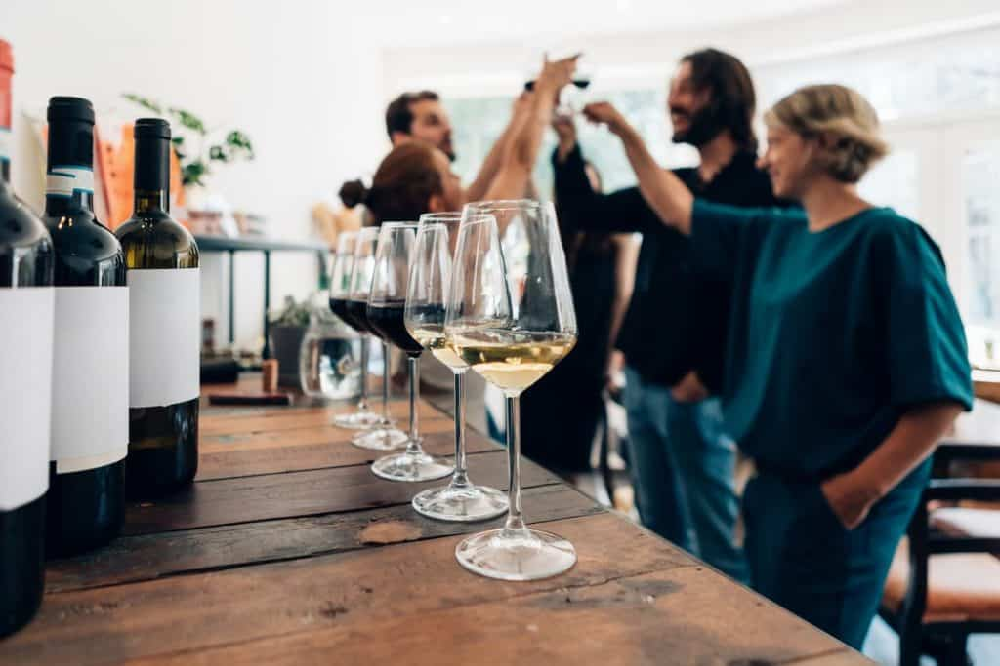
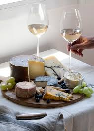
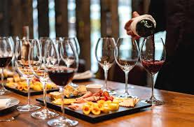

Catas en Bodega González
En Bodega González organizamos catas de vino y productos gourmet dentro de nuestra tienda, donde los asistentes pueden descubrir nuevos sabores y aprender sobre maridajes en un ambiente relajado.
Galería de nuestras catas
Algunos momentos de nuestras catas:



Una experiencia para los sentidos
Cada cata está pensada para descubrir los matices del vino y los productos españoles. Se explican aromas, sabores y técnicas de degustación mientras se prueban diferentes variedades.
Precios y Reservas
Ofrecemos varios tipos de catas para adaptarse a todos los gustos:
| Tipo de Cata | Duración | Precio | Incluye |
|---|---|---|---|
| Cata Clásica | 45 minutos | 20 € | 3 vinos + tabla de quesos |
| Cata Gourmet | 60 minutos | 28 € | 5 vinos + productos gourmet |
| Cata Privada | 75 minutos | 40 € | Experiencia personalizada |